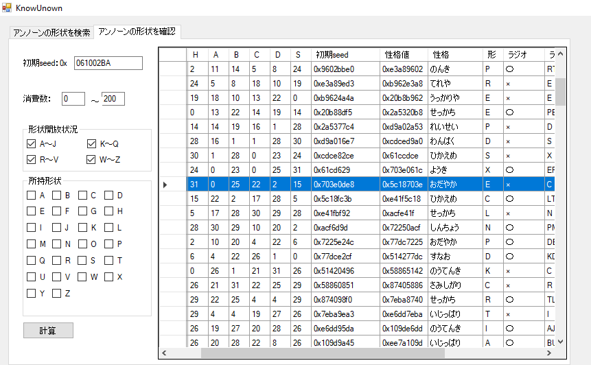

This is a text guide for how to RNG Manipulate Unown in HGSS by Bruceman Shuffle, you can find them on discord at angietwist #4965 or on reddit as BruceTwist. Thanks for allowing me to host this here, Bruce!
In Pokémon HeartGold and SoulSilver the only place to obtain Unown is in the basement of the Ruins of Alph via wild encounter after unlocking various forms via completing picture puzzles. Once you have acquired all the forms of the alphabet (A-Z), and share the progress in the Research Lab of your completed report, you unlock the ! and ? forms on the first floor of the Ruins. Obtaining a full Unown Pokédex is somewhat tedious, and for this reason, people claim that a full Shiny Unown Pokédex is considerably difficult and/or tedious outside of FireRed and LeafGreen as it is significantly more difficult to predict the form of the shiny Unown you want. It is highly recommended that you have not caught any Unown forms in your save file as of this point, and if you have, make a note of which forms you have registered in the Unown Report key item. This is also made considerably easier if you have all Unown forms released by completing the 4 puzzles in the Ruins of Alph and unlocking the special rooms to make the unlocking of the ! and ? forms easier. For reference, the Bulbapedia article on the Ruins of Alph is very helpful at all stages of this preparation.
It is a well known fact that the Personality Value, or PID, determined the form of an Unown in the third generation of Pokémon which had its own issues when wanting to shiny hunt them, but the process is a bit more involved in the fourth generation. At the bottom you can find a blogpost detailing the process of generation. It is well worth a read. Thankfully, the Mysterious Transmission that plays on the PokéGear while in the Ruins of Alph increases the probability of encountering unobtained forms, and the form generated is somewhat independent of the regular PIDRNG frames that are used for wild encounters. Consequently, it is possible to obtain all unown forms with the same PID and IVs, with the exception of the ! and ? forms.
This guide will showcase several cases of utilising the radio to obtain different Unown Forms.
We will now run through an example of catching your first shiny Unown while knowing the form, or even choosing your own letter! Use PokéFinder (or preferred equivalent) to find a spread you would like to have be shiny, and have all your in game necessities.
I will be going for this frame, and I will now check what form it is in KnownUnown. You can increase the search range of the Unown Frames in KnownUnown from 0-200 to a range of your preference. Some of the frames may not match with those in Pokéfinder, and this is due to some spreads showing the corresponding Unown RNG seed. To find yours, you can look for your desired IVs/PID and match it with the letter for your spread.
It is the letter E when no radio calls are done.
Proceed to now hit your desired frame and confirm the form. Now that I have caught my Unown E, I will check off E on the second page of KnownUnown as being registered in my Unown Report, as this will now impact the availability of other Unown forms.
The Mysterious Transmission from the radio can do one of two things to an encounter frame:
In this next example I will be going for this frame
Which corresponds to this result in KnownUnown.
What we can now see is that if we didn’t use the radio for this frame, we would obtain Unown letter R, but one application of the Mysterious Transmission and having already registered one letter in our report, we will now obtain the letter M. Once again, hit the seed to confirm.
It is important to note that for each form you collect, check them off in KnownUnown so that the alternate forms are accurate. Because of this, and the fact that all letters of the alphabet become available as you catch more forms for this frame, you can potentially pick a frame that you like, catch that form, check it off as registered on KnownUnown, and then re-use that frame and apply the Mysterious Transmission and obtain all Unown forms with the same spread but different forms.
The right-most column on KnownUnown will display the form of the spread as either ! or ? once you complete the Unown sidequest and report back to the man in the Ruins of Alph office.
I hope this guide was helpful and informative for an RNG that has not been done much, or has little attention given to it. This was partly inspired by the recent love of Unown on this subreddit, as well as my own little research project. Happy RNG-ing!
If any issues for procedure, accuracy, or credit are spotted, please let me know and I will edit/take action as appropriate.
Credits and Sources:
Thank you for reading, I hope you succeed in getting your Unown. If you have any questions feel free to ask me on Twitter @im_a_blisy or join my discord.